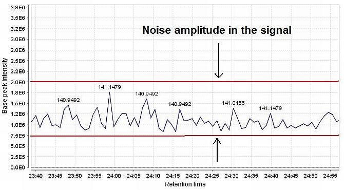
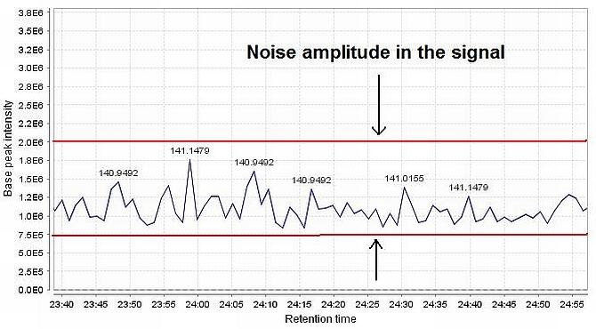
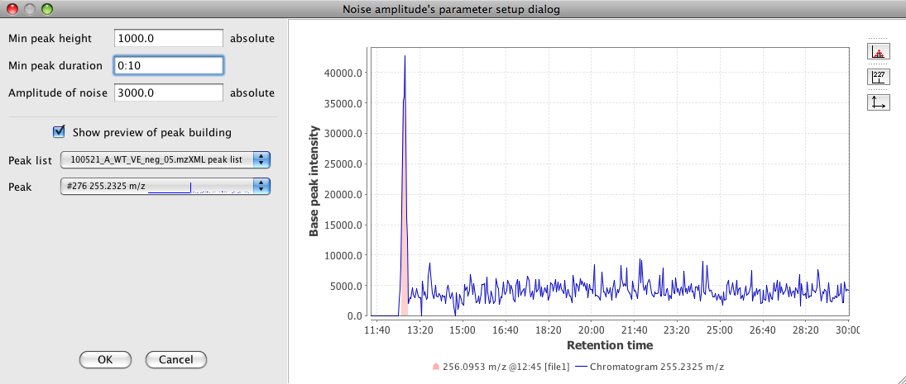

Chromatogram deconvolution
Noise amplitude
This method is suitable for chromatograms with significant background noise of varying intensities. It works in a
similar way to the Baseline cut-off method, but sets the baseline level individually for each chromatogram,
depending on the amplitude of signal noise.
The baseline level is calculated as follows:
- The intensity range of the chromatogram is divided into bins of the user-specified size (the Noise
amplitude parameter)
- The bin with the highest number of data points is found. This bin represents the intensity level of the noise
signal.
- The baseline level is set to the intensity of the bin with the most data points
 

Method parameters
- Min peak height
- Minimum acceptable height (intensity) for a chromatographic peak
- Peak duration range
- Range of acceptable peak durations
- Amplitude of noise
- This value is the intensity amplitude of the signal in the noise region
